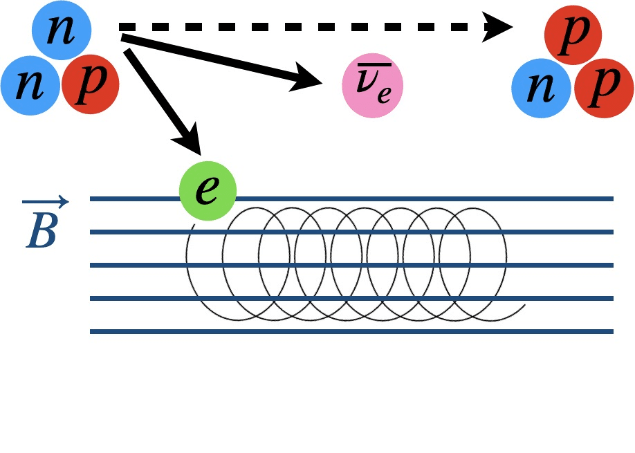

Project 8 Collaboration
The Project 8 experiment aims to measure the absolute mass of the neutrino through the beta decay of tritium. It uses a novel technique called cyclotron radiation emission spectroscopy (CRES) to measure the energy spectrum of emitted electrons with unprecedented precision.

Within the collaboration, I contributed to machine learning efforts including a U-Net-based deep convolutional autoencoder for segmenting class-imbalanced spectrogram images, improving efficiency over traditional methods by over 20%. I pioneered novel applications of NLP techniques for complex pattern detection in noisy signals, and explored physics-informed generative AI for reproducing electromagnetic signals from particle interactions. I also contributed to simulation projects including resonant cavity mode filtering and sensitivity analysis.
Recent publications are listed in the Publication section.
Previously, I also worked with the Gravitational Wave International Committee (GWIC) and the Community of Physics.